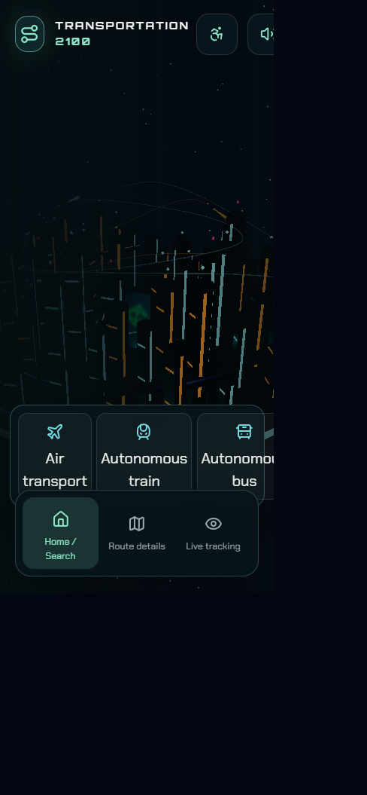
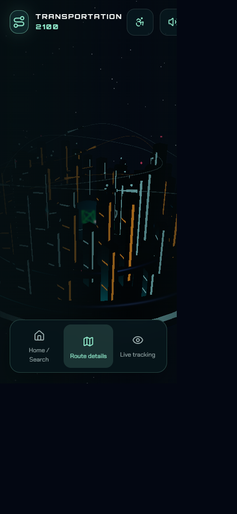
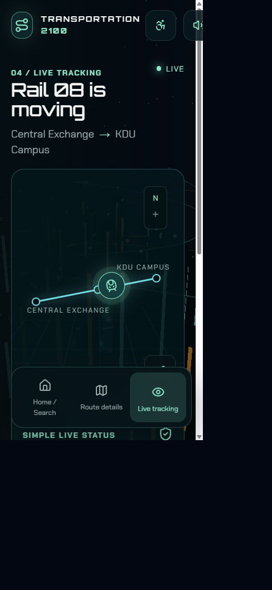

Interactive mobility concept · project report
Transportation 2100
Human-first movement through an interactive anti-gravity metropolis.
01 · Concept and design reasoning
A city that makes movement legible
Transportation 2100 imagines a future city where air transit, smart roads, autonomous buses, and underground rail work as one readable mobility network. The experience uses a living 3D city as the visual context, then layers a calm journey-planning interface over it.
The design reasoning is human-first: the spectacle establishes place, but the interface prioritizes the next decision. Users first choose a transport layer, then choose a destination, review a route, and finally follow the vehicle live.
Core idea: make futuristic infrastructure feel as understandable as checking a familiar trip on a phone.
Design principles
- Progressive disclosure: transport choices appear before selection and clear away after a mode is chosen.
- Scannability: route time, transfer, safety, status, and destination are grouped into compact panels.
- Feedback: camera transitions, Framer Motion reveals, selected states, live labels, and route metrics explain system status.
- Mobile reach: controls use large touch targets, bottom navigation, and a responsive destination drawer.
Implemented system
React 18 + TypeScript Component-driven application state and typed transit modes.
Vite 5 Fast development server and production bundling.
Three.js / React Three Fiber Procedural anti-gravity city, stars, transport corridors, and camera states.
Framer Motion Screen transitions, staggered route content, and interaction feedback.
Tailwind CSS + CSS Responsive layout, glass panels, accessible focus states, and mobile breakpoints.
Lucide icons + Web Audio API Consistent transport language and lightweight procedural sounds.
02 · Required screen 1
Home / Search
Choose a mode and destination

The opening screen presents the anti-gravity city and four transport choices: Air transport, Autonomous train, Autonomous bus, and Smart roads. Selecting a mode reveals the destination drawer with search, voice search, and quick destinations.
03 · Required screen 2
Route Details
Review the journey before departure

The route view turns a destination choice into an actionable plan: arrival time, total duration, transfer information, safety state, smart rebooking, a three-step timeline, and a clear Follow this journey action.
04 · Required screen 3
Live Tracking
Monitor the active journey

Live Tracking shows Rail 08 moving between Central Exchange and KDU Campus. A visual route map is paired with a simple status sheet for speed, current node, and safe travel conditions.
05 · User flow and reference
From city view to live journey
1Explore.
Start in the 3D city overview and choose a transport layer.
2Plan.
Select a quick destination such as Home Node, KDU Campus, or Central Sky Hub.
3Review.
Check duration, transfer, safety, and the three-step route timeline.
4Track.
Follow the journey and switch between map and linear progress views.
Interaction and accessibility
- Touch-friendly mobile controls and bottom navigation.
- High-contrast / large-text access mode.
- Visible selected, active, live, done, now, and next states.
- ARIA labels for transport, navigation, audio, route, and status controls.
- Audio can be muted with the persistent sound control.
- Keyboard shortcuts: 1 Air, 2 Smart Roads, 3 Sub-Rail, Esc/0 reset.
Live hosted link
https://aurelia-2100.vercel.app
This link is included on the cover and repeated here as the backup reference point.
Submission note
The registered team name is Team Fade and the system name is Aurelia-2100.
Suggested filename: Team Fade.pdf